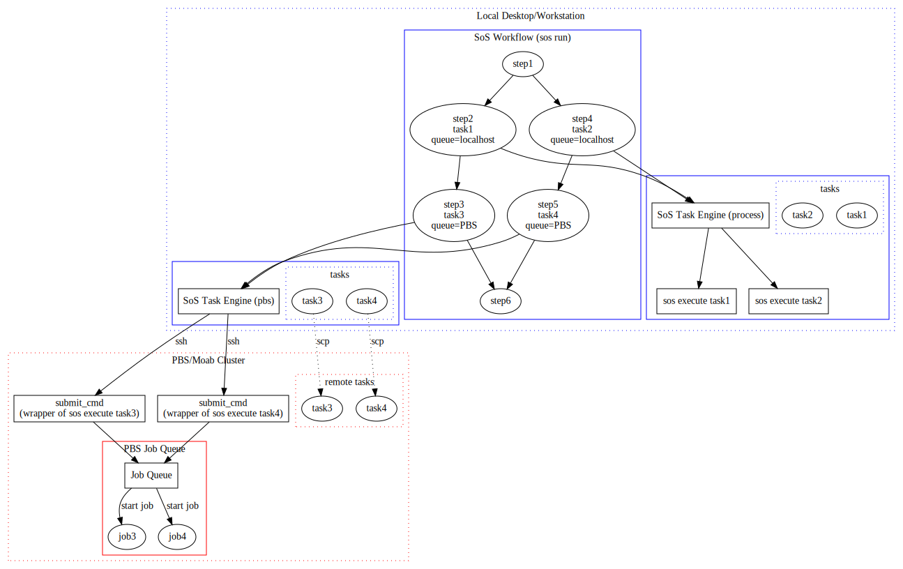

SoS provides mechanisms to execute all processing steps, regardless of languages of scripts, requirements of resources (CPU, memory usage etc), and execution environments in a single workflow or Jupyter notebook. The basis of this flexibility (and resulging reproducibility) is a task model that allows you to execute part of the workflow on remote hosts.
With the SoS task model, you can easily define part of step processes as tasks and execute them externally. The tasks are
The following figure illustrates the task model of SoS

Basically,
A step process consists of everything after the input statement. It can be repeated with different input groups defined by input options group_by or for_each. For example, if bam_files is a list of bam files,
[10]
input: bam_files, group_by=1
output: "${_input}.bai"
run:
samtools index ${_input}execute a shell script to process each bam file. This is done sequentially for each input file, and is performed by SoS.
You can easily specify part or all of a step process as tasks, by prepending the statements with a task keyword:
[10]
input: bam_files, group_by=1
output: "${_input}.bai"
task:
run:
samtools index ${_input}This statement declares the rest of the step process as a task. For each input file, a task will be created with an ID determined from task content and context (input and output files, variables etc). The task will be by default executed by a local process task queue where tasks are started as background processes.
The benefit of executing tasks externally is that the tasks are executed concurrently, on the local machine or a remote server, or be submitted to a task queue. For example, in the previous example, multiple tasks could be executed in parallel (but on the same machine) unless you specify it otherwise as follows
[10]
input: bam_files, group_by=1
output: "${_input}.bai"
task: concurrent=False
run:
samtools index ${_input}You can also use command
sos run myscript -q clusteror use option queue
[10]
input: bam_files, group_by=1
output: "${_input}.bai"
task: queue='cluster'
run:
samtools index ${_input}to submit the commands to a cluster system to be executed on different computing nodes.
hosts¶A server or task queue needs to be defined in SoS configuration file. SoS automatically loads global configuration files ~/.sos/hosts.yml, ~/.sos/config.yml, and a local configuration file ./config.yml. You can also put your settings in any configuration file and specify it with option -c. ~/.sos/hosts.yml is designed to record all host-related configurations and should be used for this purpose.
The configuration file could be edited manually if you are familiar with the YAML format. Otherwise you can use the sos config command to add or modify settings. For example, command
sos config --hosts --set hosts.shark.address username@shark.com
would write to ~/.sos/hosts.yml the following content
hosts:
shark:
address: username@shark.comThis effectively defines a host with alias shark. All configurations related to this host should be defined under shark.
localhost¶You will need to configure both localhost and server to be able to send local jobs to remote servers or task queues. A localhost should be defined to point to an existing host definition. For example, if a OfficeDesktop is defined in ~/.sos/hosts.yml as
hosts:
OfficeDesktop:
paths:
home: /Users/myuser
cluster:
address: url@cluster
paths:
home: /home/myuserYou should use command
sos config --global --set localhost OfficeDesktopto define localhost as OfficeDesktop on your office desktop, and define localhost as cluster on the cluster if you would like to submit jobs also from the cluster.
address¶IP address or URL of the host. Note that
address should be ignored for hosts, for example your desktop, that do not accept remote execution.address in the format of username@hostaddress.address is needed for windows hosts.port¶ssh port of the remote host, which is 22 by default.
shared¶Option shared tells SoS which file systems are shared between localhost and some remote hosts so that it does not have to synchronize files under these directories between the hosts.
The shared entry should be defined with name and path pairs in the format of
hosts:
desktop:
server:
shared:
project: /myprojects
HTFS: /
worker:
shared:
HTFS: /
server1:
shared:
project: /scratch/myprojects
data: /scratch/data
`The above cooked configuration says:
desktop does not share any volume with any other machine so all files need to be transferred.server and worker shares HTFS with directory /, so all files are shared.server and server1 share a project volume but the volume is mounted at different locations. So files under myprojects are not synchronized if you are submitting jobs from server to server1, and files under /scratch/myprojects are not synchronized if you are submitting jobs from server1 to server.paths¶paths defines paths that will be translated when a task is executed remotely. For example, your input file on a mac might be /Users/myuser/project/KS28.fa, but it should be named /home/myuser/project/KS28.fa if it is processed on a remote server. In this case, you should define directories /Users/myuser and /home/myuser as equivalent directories on the two hosts, using
hosts:
desktop:
paths:
home: /Users/myuser
server:
paths:
home: /home/myuserMultiple entried could be defined and the files would be mapped by the longest mapping path. For example, if you have on the server a shared location for all resources, you could define
hosts:
desktop:
paths:
home: /Users/myuser
resource: /Users/myuser/resources
server:
paths:
home: /home/myuser
resource: /shared/resourcesso that /Users/myuser/resources/hg19.fa could be mapped to /shared/resources/hg19.fa on the server. Note that /Users/myuser/resource/hg19.fa would be matched to resource instead of home because resource matches longer piece of the input path.
A remote host can be accessible from a local host only if the remote host defines all paths defined by the local host. More specifically, if host A defines path home and host B defines paths home and resource, it is possible to connect from host A to host B using home, but not from host B to A because SoS does not know how to map paths under resource.
path_map (derived)¶With definitions of paths on both hosts, SoS would derive a set of path_maps between all hosts. Actually, when you run
sos status -qto list all host configurations, SoS would list all hosts accessible from localhost, with host-specific path_map, which is a list of directory mappings between local and remote directories. For example, the path_map from desktop to server using the above example would be
/Users/myuser -> /home/myuser
/Users/myuser/resoruces -> /shared/resourcesOptions such as address and paths specify on to access, synchronize files and execute commands on a remote host. The following options specify how tasks should be executed on it.
queue_type¶Option query_type determines the type of remote server or job queue. SoS currently supports the following types of job queues:
process: this is the default queue type. Tasks are executed directly, either on local host or on a server.pbs: A PBS/MOAB/LFS/Slurm cluster system where tasks are submitted using commands such as qsub.rq: A redis queue where tasks are submitted to the rq server and monitored through rq-dashboard.celery: A celery queue where tasks are submitted to the celery server and monitored through celery's flower module.wait_for_task¶Whether or not SoS should wait for the completion of tasks (true/false). By default SoS will wait for the completion of tasks submitted in a queue and complete the workflow in one run. Alternatively, SoS would quit after all tasks have been submitted to a queue with wait_for_task set to false. The workflow can be resumed after tasks have been completed.
This option is set to True by default and can be overridden by command line option -w (wait) or -W (no wait).
status_check_interval¶Option status_check_interval determines frequency at which SoS checks status of jobs. This is set by default to 2 seconds for process queue type, and 10 seconds for all other types. This number should be set to at least 60 for remote servers and longer jobs because it can be a burden to query the status of jobs very frequently.
max_running_jobs¶Maximum number of running jobs. This setting controls how SoS releases tasks to job queues and is independent of possible maximum running job settings of individual task queues.
This option is set to 10 by default and can be overriden by command line option -J.
max_cores¶Maximum number of processes (an integer) allowed for the queue. A task would fail immediately if it specifies more cores than this option. For queues that do not require a cores option (e.g. a process queue), tasks that use more processes than max_cores will be automatically killed.
This option, along with max_walltime and max_mem that are described below, help prevent the submission of erraneous tasks to the queue. It also helps prevent the execution large jobs on wrong servers, such as the headnode of a cluster system on which only job preparation and submission steps are allowed.
max_walltime¶Maximum walltime allowed for the queue. max_walltime could be specified as a string in the format of HH:MM:SS, or an integer with units s (second), m (minute), h (hour), or d (day). A task would fail immediately if it specifies more walltime than this option. For queues that do not require a walltime option (e.g. a process queue), tasks that has exceeded max_walltime will be automatically killed.
max_mem¶Maximum memory comsumption allowed for the queue. max_mem could be specified as an integer (bytes) or a string with units such as M, G, MB etc. A task would fail immediately if it specifies more mem than this option. For queues that do not require a mem option (e.g. a process queue), tasks that use more RAM than max_mem will be automatically killed.
description¶An optional short description for the queue that will be displayed with commands such as sos status -q.
You can define arbitrary key value pairs in the host configuration. These variables could be used for the interpolation of commands and templates. For example, if you define
queue: longYou could use
#PBS -q ${queue}
in your PBS job templates (configuration job_template).
If the name of a variable matches a runtime variable (e.g. mem, walltime), its value would be overriden by corresponding runtime variable. This feature can be used to define default values for runtime variables. For example,
walltime = '10:00:00'
job_template = |
#PBS -l walltime=${walltime}would set a default walltime of 10 hours for tasks without specified walltime.
Using the default queue_type: process, the following configuration allows you to execute tasks on a remote server. You can change wait_on_task to true if you would like to wait for the completion of tasks and be able to kill runing tasks easily.
computing_server:
address: username@host.url
max_mem: 20G
max_procs: 12
max_walltime: 10h
wait_on_task: false
paths:
home: /home/usernameredis_host¶Address of the redis server, default to server address, or localhost if no address is defined. A redis host can be on a different host than the local host, but has to be on the same host as the redis worker.
redis_port¶Port of the redis server, default to 6379. Note that this is not the same as option port, which is the port for ssh communication.
queue¶Name of the redis queue for the rq worker, if the worker is started with one or more queue names.
job_template¶Option job_template is a template of a shell script that will be submitted to the PBS system. A typical template would be specified as (using a multi-line string literal of YAML format)
hosts:
server:
job_template: |
#!/bin/bash
#PBS -N ${job_name}
#PBS -l nodes=1:ppn=${cores}
#PBS -l walltime=${walltime}
#PBS -l mem=${mem//10**6}MB
#PBS -o ${cur_dir}/${task}.out
#PBS -e ${cur_dir}/${task}.err
#PBS -q long
#PBS -m ae
#PBS -M your@email.address
#PBS -v ${cur_dir}
cd ${cur_dir}
sos execute ${task} -v ${verbosity} -s ${sig_mode} \
${'--dryrun' if run_mode == 'dryrun' else ''}
The template will be interpolated with the following information
task: task idjob_name: Interpolated value of runtime option name, or task id if name is not provided. For example, name='${step_name}_${_index}' would assign names with step name and index to submitted jobs.nodes, cores, walltime, mem: resource task optionscur_dir: current project directory, which will be translated to path in remote host if the task is executed remotelyverbosity and sig_mode: sos run mode.run_mode to allow the script to be executed in dryrun mode, in which mode scripts would be printed instead of executed. It is very important to set this option because the job script would be executed directly (on head node) instead of sent to the PBS queue if sos is running in dryrun mode (sos run -q pbs -n).Note that
nodes, cores, walltime, and mem) as task options if they are used in the job template without default values.cluster-short and a cluster-long on the same cluster.Alternatively, it is possible to derive the options from existing runtime options. For example, you could put a task to long queue if it runs more than 24 hours
#PBS -q ${'long' if int(walltime.split(':')[0]) > 24 else 'short'}submit_cmd¶A submit_cmd template is the command that will be executed to submit the job. It accepts the same set of variables as job_template, with an additional variable job_file pointing to the location of the job file on the remote host. The submit_cmd is usually as simple as
qsub ${job_file}
but you could specify some options from command line instead of the job file and define submit_cmd as
msub -l ${walltime} < ${job_file}
submit_cmd_output¶This option specifies the output of the submit_cmd command and let SoS know how to extract job_id and other information from it. For example, for a regular PBS system, the output is simply the job_id (stripping spaces and newlines).
submit_cmd_output='{job_id}'On a LSF system, the output should be similar to
submit_cmd_output='Job <{job_id}> is submitted to queue <{queue}>'The information extracted (namely variables defined) from submit_cmd can be used for other commands such as status_cmd. Note that this parameter uses pattern matching { } to extract variable, instead of ${ } to use variables.
This option is defult to {job_id}.
status_cmd¶An command to query the status of a submitted task. For a standard PBS system, this option could be
qstat ${job_id}where job_id is the output of command submit_cmd. The status_cmd is interpolated with variables job_id (PBS job ID), task (SoS task id), and verbosity (command line verbosity level) so you would adjust options for different verbosity level (e.g. ${'-f' if verbosity > 2 else ''}).
Note that the status_cmd is only called with -v 2 or higher.
kill_cmd¶A command to kill a submitted job on the cluster. For a standard PBS system, this option could be
qdel ${job_id}where job_id is the output of command submit_cmd.
cluster:
address: host.url
description: cluster with PBS
paths:
home: /scratch/username
queue_type: pbs
status_check_interval: 30
wait_for_task: false
job_template: |
#!/bin/bash
#PBS -N ${task}
#PBS -l nodes=${nodes}:ppn=${ppn}
#PBS -l walltime=${walltime}
#PBS -l mem=${mem//10**9}GB
#PBS -o ${home_dir}/.sos/tasks/${task}.out
#PBS -e ${home_dir}/.sos/tasks/${task}.err
#PBS -m ae
#PBS -M bpeng@mdanderson.org
#PBS -v ${cur_dir}
cd ${cur_dir}
sos execute ${task} -v ${verbosity} -s ${sig_mode} ${'--dryrun' if run_mode == 'dryrun' else ''} max_running_jobs: 100
submit_cmd: qsub ${job_file}
status_cmd: qstat ${job_id}
kill_cmd: qdel ${job_id} cluster:
address: host.url
description: cluster with MOAB
paths:
home: /scratch/username
queue_type: pbs
status_check_interval: 30
wait_for_task: false
job_template: |
#!/bin/bash
#PBS -N ${task}
#PBS -l nodes=${nodes}:ppn=${ppn}
#PBS -l walltime=${walltime}
#PBS -l mem=${mem//10**9}GB
#PBS -o ${home_dir}/.sos/tasks/${task}.out
#PBS -e ${home_dir}/.sos/tasks/${task}.err
#PBS -m ae
#PBS -M bpeng@mdanderson.org
#PBS -v ${cur_dir}
cd ${cur_dir}
sos execute ${task} -v ${verbosity} -s ${sig_mode} ${'--dryrun' if run_mode == 'dryrun' else ''} max_running_jobs: 100
submit_cmd: msub ${job_file}
status_cmd: qstat ${job_id}
kill_cmd: qdel ${job_id} lfs:
address: host.url
description: cluster with LSF
paths:
home: /rsrch2/bcb/bpeng1/
project: /scratch/bcb/bpeng1/RNASeq
queue_type: pbs
status_check_interval: 30
wait_for_task: false
job_template: |
#!/bin/bash
#BSUB -J ${job_name}
#BSUB -q ${'short' if int(walltime.split(':')[0]) < 24 else 'long'}
#BSUB -n ${cores}
#BSUB -M ${mem//10**9}G
#BSUB -W 1:0
#BSUB -o ${home_dir}/.sos/tasks/${task}.out
#BSUB -e ${home_dir}/.sos/tasks/${task}.err
#BSUB -N
#BSUB -u bpeng@mdanderson.org
cd ${cur_dir}
sos execute ${task} -v ${verbosity} -s ${sig_mode} ${'--dryrun' if run_mode == 'dryrun' else ''}
max_running_jobs: 100
submit_cmd: bsub < ${job_file}
submit_cmd_output: 'Job <{job_id}> is submitted to queue <{queue}>'
status_cmd: bjobs ${job_id}
kill_cmd: bkill ${job_id}This configuration defines default walltime and cores.
mstephens:
description: cluster with SLURM
address: host.url
paths:
home: /home/username
queue_type: pbs
status_check_interval: 120
max_running_jobs: 15
max_cores: 28
max_walltime: "36:00:00"
max_mem: 256G
job_template: |
#!/bin/bash
#SBATCH --time=${walltime}
#SBATCH --partition=mstephens
#SBATCH --account=pi-mstephens
#SBATCH --nodes=1
#SBATCH --ntasks-per-node=${cores}
#SBATCH --mem-per-cpu=${mem_per_cpu}
#SBATCH --job-name=${job_name}
#SBATCH --output=${cur_dir}/.sos/${job_name}.out
#SBATCH --error=${cur_dir}/.sos/${job_name}.err
cd ${cur_dir}
mkdir -p .sos
sos execute ${task} -v ${verbosity} -s ${sig_mode} ${'--dryrun' if run_mode == 'dryrun' else ''}
walltime: "06:00:00"
cores: 20
mem_per_cpu: 1000
submit_cmd: sbatch ${job_file}
submit_cmd_output: "Submitted batch job {job_id}"
status_cmd: squeue --job ${job_id}
kill_cmd: scancel ${job_id}Task Spooler is a light-weight task spooler for single machines.
taskspooler:
description: task spooler on a single machine
address: username@host.url
port: 32771
paths:
home: /home/user
queue_type: pbs
status_check_interval: 5
job_template: |
#!/bin/bash
cd ${cur_dir}
sos execute ${task} -v ${verbosity} -s ${sig_mode} ${'--dryrun' if run_mode == 'dryrun' else ''}
max_running_jobs: 100
submit_cmd: tsp -L ${task} sh ${job_file}
status_cmd: tsp -s ${job_id}
kill_cmd: tsp -r ${job_id}The following options are options to keyword task: and specify how tasks should be executed.
The resource options such as walltime and cores will be sent to individual task queues in appropriate format. You do not have to specify all options because task queues can support a subset of these options and some task queues provide default values (and some do not). It is however generally a good idea to specify them all so that your tasks could be executed on all types of task queues.
The execution options such as workdir, env, concurrent specify environments in which tasks will be submitted and executed.
walltime¶Estimated maximum running time of the task. This parameter will be sent to different task queues and it is up to the task queue to decide if the task would be killed if the task could not be completed within specified walltime. walltime could be specified as a string in the format of HH:MM:SS where HH, MM and SS are hours, minutes, and seconds, or an integer with units s (second), m (minute), h (hour), or d (day), although the internal format of walltime (when you use walltime in job_template etc) is always HH:MM:SS. For example, you could use walltime='240:00:00' or walltime='10d' for a job that would run 10 days.
cores¶Number of cores on each computing node, which corrsponds to the ppn option of a PBS system.
PBS task queue also accepts a parameer nodes (corresponds to PBS resource option nodes, default to 1) but it is currently unused because SoS does not yet support multi-node tasks.
mem¶The total amount of memory needed across all nodes. Default units are bytes; can also be expressed in megabytes (mem=4000MB). gigabytes (mem=4GB) or gibibytes (mem=4GiB), although all inputs are converted to bytes internally. To use this option in a job_template, you generally need to use expressions such as ${mem//1e9}GB.
name¶Name of the task, which can be a string such as 'task' (for task ID) that would be interpolated when a task is generated. The value of this parameter has to be single quoted because otherwise the string would be interpolated before it is passed to task engine.
This option has default '${step_name}_${_index}' and is currently only used to produce variable job_name for job template.
queue¶Option queue specifies a task queue to which the current task will be submitted. This option overrides system default (command line option -q) so it is generally a good idea to use command line option -q so that the task could be submitted to different task queues, unless the task has to be executed in a particular server (e.g. with a software that is unavailable elsewhere).
to_host¶Option to_host specifies additional files or directories that would be synchronized to the remote host before tasks are executed. It can be specified as
{local: remote} file maps that specify how local files are synchronized to the remote host.In the first two cases, the files or directories will be translated using the host-specific path maps. In the last case, the remote path (that should be relative to the remote file system) will be used without translating local file.
Note that
to_host, both the symbolic link and the path it refers to would be synchronized to the remote host.to_host is usually ignored unless it is specified in the third dictionary format, which copies files to another location before task execution. from_host¶Option from_host specifies additional files or directories that would be synchronized from the remote host after tasks are executed. It can be specified as
{local: remote} file maps that specify how local files are synchronized from the remote host.In the first two cases, the files or directories will be translated using the host-specific path maps to determine what remote files to retrieve. In the last case, the remote path (that should be relative to the remote file system) will be used without path translation. If the task is executed on the local host (remote host coincide with local host), this option is usually ignored unless it is specified in the third dictionary format, which copies files to another location after the task is executed.
map_vars¶In addition to input (_input), output (_output), depends (_depends) that are defined implicitly by input:, output: and depends: statements, you can specify additional variables that will be translated from local to remote host. This option accepts paths int he format of str or sequence (list, tuple, set etc) of str and will be mapped to variable of the same type (with paths replaced by remote paths on remote host).
trunk_size¶Options trunk_size and trunk_workers are useful for dividing a large number of small tasks into several larger tasks so that they can be executed efficiently on a cluster system.
Option trunk_size groups concurrent tasks into trunks of specified size. For example, if you need to run 10000 simulations that each lasts about 1 minute, you can group the tasks into 10 umbrella tasks, each running 1000 simulations.
[10]
import random
input: for_each={'seed': [random.randint(1, 10000000) for x in range(10000)]}
task: mem=`1G`, walltime='1m', cores=2, trunk_size=1000
sh:
run_simulation --seed $(seed) >> res_${seed}.resThe unbrella tasks have the following properties:
M#_ where # is the number of embedded tasks.walltime automatically so in the above example, each umbrella task will have walltime='16:40:00' (1000 minutes). name (job name on PBS systems) will be adjusted to ${name)_## (e.g. default_10_6000_1000 if default name='${step_name}_${_index}' is used) where ## is the number of subtasks.-s force is specified to forcefully re-execute all tasks).trunk_workers¶Option trunk_workers specifies number of workers for umbrella tasks. If this option is specified, an umbrella task will be executed by a master process that dispatches embedded tasks to trunk_workers workers. Using the same simulation example with trunk_workers=5,
import random
input: for_each={'seed': [random.randint(1, 10000000) for x in range(10000)]}
task: mem=`1G`, walltime='1m', cores=2, trunk_size=1000, trunk_workers=5
sh:
run_simulation --seed $(seed) >> res_${seed}.res10000 / 1000 = 10 umbrealla tasks each with 1000 (trunk_size) subtasks.2 * 5 + 1 = 11 cores where the extra core is used by the master process.5 * 1G).walltime of 1000 / 5 * 1 = 200 minutes (walltime='03:20:00').workdir¶Default to current working directory.
Option workdir controls the working directory of the task. For example, the following step downloads a file to the resource_dir using command wget.
[10]
task: workdir=resource_dir
run:
wget a_url -O filename
Runtime option workdir will be translated to remote host if the task is executed remotely.
concurrent¶Default to True.
If the step process is repeated for multiple input groups (using input options group_by or for_each), all loop processes will by default be sent to the task engine to be executed in parallel (subject to max_running_jobs of individual task queue). If your tasks are sequential in nature (e.g. the next input group depends on the result of the current input group), you can set concurrent=False, in which case the next task will be generated and sent to the task queue only after the current one has been completed.
shared¶SoS tasks are executed externally and by default does not return any value. Similar to the shared step option (that passes step variables to the workflow), you can use shared option to pass task variables to the step in which the task is defined.
For example, the following script perform some simulations in 10 tasks and return the result by variable rng, which is then shared to the workflow by step option shared so that it can be available to the next step.
%run
[10 (simulate): shared='rng']
input: for_each={'i': range(10)}
task: shared='rng'
print("${i}")
import random
rng = random.randint(1, 1000)
[20]
print(rng)
It is important to note that, however, because there can be multiple tasks in one step, the variables returned by tasks are dictionaries with loop index _index as keys.
Also similar to step option shared, task option shared accepts a single variable (e.g. rng), a sequence of variables (e.g. ('rng', 'sum')), a dictionary of variable derived from an expression (e.g. {'result': 'float(open(output).read())'}, or sequences of names and variables. In the dictionary case, the values of the dictionary should be an expression (string), that will be evaluated upon the completion of the task, and assign to the specified variable.
env¶The env option allow you to modify runtime environment, similar to the env parameter of the subprocess.Popen function. For example, you can execute your command with in a specific directory using
task: env={'PATH': '/path/to/mycommand' + os.sep + os.environ['PATH']}
run:
mycommand
Option env is NOT translated to remote host because it is of type directionay. The job template is usually a good place to set host-specific environment.
prepend_path¶Option prepend_path is a shortcut to option env to prepend one (a string) or more (a list of strings) paths to system path. For example, the above example can be shortened to
task: prepend_path='/path/to/mycommand'
run:
mycommand
Option prepend_path is NOT translated to remote host because it is likely to be host specific.
active¶Option active specifies the active task within a input loop. It should be an index or a list of indexes when the task will be executed. Negative index is acceptable (e.g. task for only the last input loop will be executed with active=-1).
All targets are by default local, in the sense that they are available locally. Local targets will be synchronized to remote hosts to be processed by tasks. Remote tasks are targets that reside on a remote host. Remote targets will not be synchronized between local and remote hosts.
| Local Targets | Remote Targets | |
|---|---|---|
| location | locally | on remote host (although a remote host can be local) |
| representation | w.r.t local file system | w.r.t remote file system |
| Path translation | Translate to paths on different remote hosts if needed | Not translated |
| processed in tasks | Yes | Yes |
| processed outside of tasks | Yes | No |
| Synchronized | Yes | No |
In summary, remote targets allow you to use remote resources directly without synchronizing them to local host. SoS currently assumes that the targets are available on the host where the tasks are executed so there is no need to specify the host name for the targets.
local and remote target types¶Any targets can be specified as local or remote with syntax local('input.txt'), remote('input.txt') or remote(R_Library('ggplot2')). For example, you could use the following step to process a large input file and only synchronize small output files to local desktop for further analysis:
[10]
input: remote('/path/to/large/input/file')
output: remote('large_output'), local('summary.stat')
task:
sh:
script to generate large_output and summary.stat
from large input files.Here local can be ignored because it is the default mode for this step.
local and remote section options¶If you have a large number of input and output files, it can be tedious to add remote to each target. In this case, you can use section option remote or local to set default mode for all targets in a step. For example, the above example can be written as
[10: remote]
input: '/path/to/large/input/file'
output: 'large_output', local('summary.stat')
task:
sh:
script to generate large_output and summary.stat
from large input files.Here local is needed because the default mode of the targets are remote. You can of course do
[10: local]
input: remote('/path/to/large/input/file')
output: remote('large_output'), 'summary.stat'
task:
sh:
script to generate large_output and summary.stat
from large input files.to use local as the default mode for targets in this step.
If all your input, dependent, and output files are on the remote server and you do not need to synchronize any of the files to the local machine, it makes sense to execute the entire workflow remotely. In this case, you can execute the workflow with -r HOST option, which essentially speaking
-rThe workflow will be executed directly on remote host (not as a task, and not submitted to task queue even if the queue_type of host is not process), in a directory that corespondes to the current working directory of the local host (path_map will be used). It is possible to create and submit tasks (e.g. use option -r HOST1 in combination with -q HOST2) but the tasks would be submitted from the remote host HOST1.
-q¶Option -q can be used by all task-related commands. It specifies a remote server or task queue, with detailed information defined in either global (~/.sos/config.yml) or local (./config.yml) configuration files. You can also save configurations to other configuration files and specify them using option -c. E.g.
sos run myscript -q shark -c shark.yml
uses definition of shark defined in shark.yml. You can define hosts in any of the configuration files and definitions loaded later override previous definitions. For example, you could define a set of test servers that is identical to definitions in global definition, but with max_running_jobs set to 1. You can then use
sos run myscript -q shark -c test.ymlfor test runs and
sos run myscript -q sharkfor regular execution.
It is also possible for you to specify a host without configuration. Such hosts have default values
alias = host
address = host
queue_type = process
path_map = []
shared = []which assumes that the host is a remote machine with identical but not shared file systems and without any task queue.
Finally, if option -q is specified without value, the sos command will exit with a list of configured hosts so you can use command
sos status -qto list all configured queued. Details of each queue will be displayed with option -v3 or -v4.
sos status -q -v3sos run -q¶The -q option of command sos run (or sos-runner) sets the default task queue for all tasks. For example,
sos run myscript -q shark
would send all tasks in workflow default defined in myscript.sos to a task queue shark. Note that this option does not override option queue of steps so you could send some tasks to specific queues and all others to the default queue.
sos dryrun¶The dryrun running mode is very useful in checking if your scripts are correctly translated and if your machine settings are correct. It is strongly recommended that you execute your script in dryrun mode before submitting them to remote hosts and/or task queues.
How tasks are executed depends a bit on your configuration but basically,
For local tasks (process task engine), the tasks are executed directly with sos execute task -n (-n for dryrun mode).
For direct remote execution (e.g. sos run script -q server -n with queue_type set to process (default)), the tasks will be generated and copied to the remote server, and will be executed with command sos execute task -n.
For submitting to a PBS task queue (e.g. sos run script -q pbs -n with queue_type set to pbs), the tasks will be generated, copied to remote host. Job files will also be generated according to job_template and will be copied to the remote host. However, instead of using submit_cmd to submit the job to the PBS queue, the job script will be executed directly on the head node. It is therefore important for you to allow the jobs to be run in dryrun mode and complete in seconds. Otherwise your system admin would hunt you for running large jobs directly on head nodes.
Dryrun mode allows you to test your workflow on a new server or task queue with the following approach:
host_test queue that is identical to host but with max_running_jobs set to 1.Run the script in dryrun mode, which would perform all file synchronization, task translation, submission steps, and execution steps. The only difference is that the scripts are printed instead of executed.
sos run script -q host_test -nkill the command with Ctrl-C if the scripts are correct.
Submit one job to the task queue using command
sos run script -q host_testkill the command if the task gets started and runs correctly.
sos run script -q host-w and -W¶Options -w (wait) and -W (no-wait) tells SoS to wait (or not wait) for the completion of tasks, which overrides the default wait mode for the task queue used (option wait_for_task). For example, a local process queue might be running in wait mode and a remote PBS queue is likely to be running in no-wait mode.
When a workflow is executed and reaches a point where all tasks have been submitted and no more step could be executed (namely the entire workflow is waiting for the completion of tasks), it will continue to wait in wait mode or quit in no-wait mode. Note that
| feature | wait mode | no-wait mode |
|---|---|---|
| when | -w or default for task queue with wait_for_task=true |
-W or default for task queue with wait_for_task=false |
| keyboard interruption | kills all running tasks | runing tasks are not affected |
| task monitoring | continuous | external |
| when tasks are completed | results synced, continue execution | results stay on server (if remote) until the workflow resumes to fetch them |
| resume execution | not needed | Command sos resume |
sos resume¶Command sos resume resumes the execution of specified or last-executed workflow. In its simplest form, you can execute a workflow in no-wait mode
sos run workflow --options -Wif the command exit with a number of running tasks, you can run
sos resumeto resume the execution of workflow at any time. The command will exit immediately if all tasks are still running, and resume the execution if some tasks are completed. If more tasks are to be submitted, this command will exit again after submission more tasks unless option -w is specified.
This command also accepts an option --status to check the status of pending workflows so if you are not sure if your workflows have been completed, you can execute
sos resume -sto check the status of them. Note that sos resume does not have to be executed on the directory where the workflows were submitted so you can resume or check status of workflows from any directory.
sos status¶Command
sos status [tasks] -q query
checkes the status of tasks. You can specify any number of first characeters of a task to specify a task, for example,
sos task 7
sos task 77e
sos task 7736e
would all work for a task with ID 77e36e7404cf6c2ef7079a09e84a4d6d, but multiple tasks could be identifies if they share the same leading digits. Actually,
sos taskwould match all tasks and list the status of all local tasks.
Option -q specifies the task queue to monitor. For example,
sos status -q dockerwould check the status of all tasks on a remote host docker. You can monitor the tasks on docker on any machine with defined host docker.
sos status -v -q¶Option -v controls the details of the output of command sos status. For example,
sos status e7404cf6c2 -v0would print just the status of the task (e.g. running).
sos task 77e -v1would print the task id and their status
77e36e7404cf6c2ef7079a09e84a4d6d running
77e3c2ef7079a236e7404cf6c2f343d3 completedOption -v0 and -v1 could check the status of multiple tasks, as realized by SoS. Some tasks queues have their own task status command and option -v2 (and upper) will use these commands (if specified) to check the status of the jobs. That is to say
sos task 77e36 -v2
might return output of a command
qstat 18433if the task has been submitted to a cluster named shark with a job id 18433.
If you would like to know more about the tasks,
sos task 77e36 -v3
would list the script the task is running and all variables in abbreviated format, and
sos task 77e36 -v4
would list all variables in complete form.
Finally, using -q in combination with -v allows you to list the variables used in remote server.
sos task 77e36 -v4 -q linux
sos kill¶Command
sos kill [tasks] [-q queue]
kills specified or all tasks on specified job queue queue. Because the same job could be executed on different queues (you have have done so), you will have to specify the correct queue name to kill the job on different queues.
sos execute¶Command
`
sos execute [tasks] [-q queue]is the command that is used internally by sos run to execute tasks but you could use this command to execute tasks externally. For example, if a task failed on a server, you could use command
sos execute task_id -q serverto execute the command on another server. Note that task_id specifies a local task with local paths. The task will be converted to a remote task (with path names converted for that host) if server specifies a remote host. This makes it easy for you to re-submit tasks to the same server after changing server configuration, or submit the same task to a different server.
sos purge¶Command sos purge is used to clear completed or failed tasks. You can remove all tasks related to current project (default), tasks by age (--age) or status (option --status) from local or remote host (option -q). For example, command
sos purge -q clusterremoves all tasks related to current project from a remote cluster,
sos purge --age 2dremoves all tasks that are created more than 2 days ago, and
sos purge -q cluster -s completedremoves all completed tasks from the remote cluster.
You can also specify the IDs of tasks to be removed, e.g.
sos purge 38efremoves all tasks with ID starting with 38ef.
Finally, if you would like to remove all tasks related information, including tasks that are not generated by workflows from the current project (directory), you can use command
sos purge --allto clear all information.
The following example demonstrates how to configure a remote host (with a PBS queue system) and submit your tasks to it. It can be tricky to set up public key access, configure host, and get everything working but you only need to do this once for each server or task queue that you would like to use. After that, you are free to submit your tasks to any of the servers without worrying about different file systems, task queues etc.
~/.sos/hosts.yml
hosts:
nautilus:
address: nautilus.mdanderson.edu
paths:
home: /scratch/bcb/bpeng1
queue_type: pbs
status_check_interval: 30
job_template: |
#!/bin/bash
#PBS -N ${job_name}
#PBS -l nodes=1:ppn=${cores}
#PBS -l walltime=${walltime}
#PBS -l mem=${mem//1000000}GB
#PBS -o ${home_dir}/.sos/tasks/${task}.out
#PBS -e ${home_dir}/.sos/tasks/${task}.err
#PBS -m ae
#PBS -M bpeng@mdanderson.org
#PBS -v ${cur_dir}
cd ${cur_dir}
sos execute ${task} -v ${verbosity} -s ${sig_mode} \
${'--dryrun' if run_mode=='dryrun' else ''}
max_running_jobs: 100
submit_cmd: msub ${job_file}
status_cmd: qstat ${job_id}
kill_cmd: qdel ${job_id}
workstation:
paths:
home:/Users/bpeng1~/.sos/config.yml
localhost: workstation[10]
input: for_each={'tid': range(10) }
task: walltime='20m', mem='100M'
run:
echo I am task ${tid}
sleep ${60 * (tid + 1)}sos run test -q nautilus
sos status -q nautilus
sos kill cb1 -q nautilus